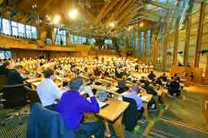

This page displays *all* news items from General, Legal, Public Interest, and Financial Office Workers Industrial Union 650.
For an overview of the IU 650's history and contact information, please visit our homepage.
Submitted on Thu, 06/21/2007 - 3:50am
 New York, NY- Less than three months after the National Labor Relations Board hit Starbucks with a 30-count legal complaint, the federal agency has once again accused the coffee giant of breaking the law in a continuing effort to undermine the IWW Starbucks Workers Union [StarbucksUnion.org]. Based on an independent investigation into the company’s conduct, the Board has alleged that Starbucks fired outspoken union barista, Isis Saenz, for protected organizing activity.
New York, NY- Less than three months after the National Labor Relations Board hit Starbucks with a 30-count legal complaint, the federal agency has once again accused the coffee giant of breaking the law in a continuing effort to undermine the IWW Starbucks Workers Union [StarbucksUnion.org]. Based on an independent investigation into the company’s conduct, the Board has alleged that Starbucks fired outspoken union barista, Isis Saenz, for protected organizing activity.
“It’s beyond dispute now that Starbucks is waging one of the most relentless anti-union operations in the United States today,” said Stuart Lichten, the IWW’s attorney on the case. “If Wal-Mart has a soul mate in the union-busting arena, it’s Starbucks.”
Submitted on Mon, 06/11/2007 - 3:10am
More than 150 people have signed a petition pledging to boycott WHSmith over plans to relocate Leicester's flagship post office.
Their signatures were collected in a few hours on Saturday during a protest outside the post office in Bishop Street.
The protest was organised by the Industrial Workers of the World union (IWW), which is campaigning against the branch's relocation to the basement of WHSmith, in Gallowtree Gate.
Stuart Price, from IWW, said the union felt a boycott would be the most effective way of letting bosses at Royal Mail and WHSmith know how strongly people opposed the move.
He said response to the petition had been "very positive".
Leicester's main post office is one of 76 branches nationwide that are to be relocated to WHSmith stores.
The Gallowtree Gate branch has started recruiting staff for the post office, and building work is under way.
Sandra Cutland, 40, from Braunstone, said: "They should keep it where it is."
John McKiernan, 44, of Knighton, Leicester, signed the pledge along with his mother, Iris.
He said: "Hopefully, with people signing this pledge and sticking by it, WHSmith will have to listen to what people are saying."
A spokeswoman for WHSmith said people had the chance to raise concerns about access during the consultation period on the relocation.
She said: "We would be extremely disappointed if they felt boycotting WHSmith would be the best way of saving the post office and keeping it where it is."
Customers wanting to comment on the proposed changes should write to: Philippa Wright, National Consultation Manager, Post Office Limited, c/o National Consultation Team, PO Box 2060, Watford WD18 8ZW.
The closing date for comments is June 20.
Submitted on Wed, 01/03/2007 - 12:44pm
"Why I'm a wobbly" - Three members of the Industrial Workers of the World, from different political and working backgrounds, explain why they joined the IWW, and how they see their union.
The Industrial Workers of the World (IWW) in Britain is growing. Freedom talked to three of its members about why they joined the union, its relationship with the anarchist movement and the relevance of the organization today.
Why did you join IWW?
Barbara: I am in an unusual employment situation. I am employed by elected representatives (members of the Scottish Parliament) who are also my comrades in the party of which I'm a member and activist. However there was no obvious trade union to be a member of. The vast majority of us were employed at the same time, shortly after the last Scottish Parliament elections and were encouraged to join the National Union of Journalists by a comrade. However I was unhappy about this as my work does not involve any journalism, and to be a member of the NUJ you have to state what percentage of your work is journalism. When I asked the full time organiser who came to recruit us, he was patronising and sexist - using phrases about me like "just a secretary". I challenged him but he only made it worse with more inappropriate comments. There was no way I could join the NUJ. I looked around and decided that I would join the IWW. I liked the idea that it's a union for all workers, no matter what kind of work you do. I also like the idea of one big union. Quite a few of my colleagues also joined the IWW as dual carders and we now have a job branch in the parliament.
Submitted on Tue, 01/02/2007 - 2:26pm
The Twin Cities GMB has written a letter to Scottish Parliament Members expressing our solidarity with the affected workers in the current dispute there, whose struggle has been endorsed by both the local IWW and the National Union of Journalists. Full text below the fold...
Industrial Workers of the World
Twin Cities General Membership Branch
TO:
Tommy Sheridan MSP
Rosemary Byrne MSP
George Reid MSP (Presiding Officer of the Scottish Parliament)
Scottish Parliament
Holyrood, Edinburgh
EH99 1SP, United Kingdom
CC: Barbara Scott
14 December 2006
The Twin Cities General Membership Branch (GMB) of the Industrial Workers of the World (IWW) supports the IWW and the National Union of Journalists (NUJ) at the Scottish Parliament in their industrial dispute with Tommy Sheridan MSP and Rosemary Byrne MSP. We call for:
- an immediate return of all misappropriated funds to the employees resources group, an apology from the two MSPs, and for the Scottish Parliament to accept its culpability in conspiring with Sheridan and Byrne to unilaterally abrogate workers' collective contracts, thus forcing them into redundancy.
- The workers in question, who are employed by the Scottish Parliament as Caseworkers, Researchers and Parliamentary Assistant's for the SSP group, gained a major improvement in their employment situation when the May 2005 contract pooling MSP employment funds was won. These are collective gains; precisely the kind that we value the most and must protect.
The workers have made it very clear, and the Twin Cities GMB reaffirms, that this is not a political dispute but an industrial one. It is untenable that politician-employers could unilaterally, with the connivance of the Scottish Parliament, discard these collective gains for the sake of a political dispute. Workers' rights are not subject to political machinations.
Submitted on Mon, 12/11/2006 - 3:52am
IWW Staff Report - Industrial Worker, January 2007
As Christmas approaches, 11 workers at the Scottish Parliament face broken contracts and unemployment in the new year, courtesy of the self-proclaimed champions of the Scottish working class, MSPs Tommy Sheridan and Rosemary Byrne.
They are both Members of Scottish Parliament, Sheridan being the only candidate for the Scottish Socialist Party elected when the parliament was founded in 1999, and Byrne one of five more who joined him after the second election in 2003.
Their party has been torn by a bitter dispute, centred around Sheridan's leadership, and a legal action he took against the News of the World when the paper made allegations about his private life. The rancour ended in Sheridan and Byrne's resignation from the SSP to found a new party called Solidarity.